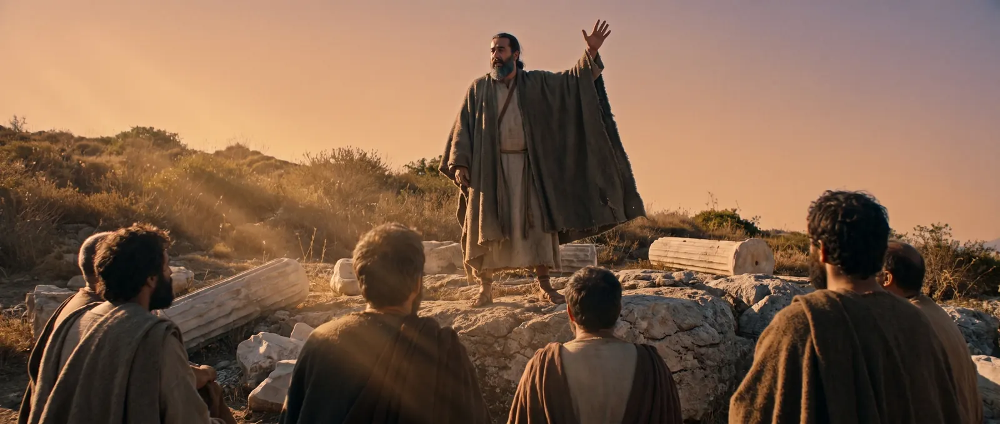

I
I
Сын закона
Тарс, Иерусалим · ок. 34 г.
Лучший ученик Гамалиила получает первое поручение от синедриона. Он не бросит ни одного камня в Стефана. Он сделает хуже — он согласится.
Человек, которого избрал Бог
Восемь серий об одном человеке, который за тридцать пять лет прошёл двадцать тысяч километров, трижды тонул, пять раз был бит плетьми и написал четырнадцать писем, пережившие империю, которая его казнила.
Поэпизодный план на 8 серий, визуальная библия, палитра и типографика, листы персонажа в двух возрастах, 17 ключевых кадров.
Иннокентий Херсонский, «Жизнь Святого Апостола Павла». Восемь глав-этапов книги легли в основу восьми серий один в один.

«Савл, Савл, что ты гонишь Меня?» Деян. 9:4
Тарс, Киликия, начало первого века. Сын состоятельного иудея, римский гражданин по рождению, ремесленник по ремеслу: он шьёт грубую парусину и знает Закон наизусть. В Иерусалиме, у ног Гамалиила, он становится лучшим учеником лучшей школы — и самым непримиримым. Когда толпа побивает камнями Стефана, он сторожит одежды свидетелей и не отводит глаз.
Ему дают грамоты на арест последователей новой секты в Дамаске. Восемь дней пути. На середине дороги свет сбивает его с ног, и три дня он не видит ничего. За ним приходит человек, которого он ехал арестовать.
Дальше — тридцать пять лет дороги. Его не принимают ни свои, ни чужие. Он спорит с Петром, ссорится с Варнавой, зарабатывает на жизнь руками, чтобы никого не обременять. Он говорит с философами в Афинах, поднимает мятеж ремесленников в Ефесе, тонет у Мелита и добирается до Рима под конвоем.
В 67 году, в римской камере, где горит одна лампа, он пишет последнее письмо. Сериал заканчивается пустой дорогой на рассвете и брошенным на камне плащом. Казни в кадре нет.
Мы не снимаем житие. Мы снимаем биографию человека, который был неправ, узнал об этом в одну секунду и потратил остаток жизни на то, чтобы это исправить. Такая история работает независимо от того, верит зритель или нет.
Каждая серия — законченный этап пути с собственным конфликтом. Сквозная линия сезона: человек, который всю жизнь был уверен, что служит Богу, и дважды в жизни узнаёт, что ошибался.
I
Лучший ученик Гамалиила получает первое поручение от синедриона. Он не бросит ни одного камня в Стефана. Он сделает хуже — он согласится.
 II
II
Восемь дней пути с грамотами на арест. На середине дороги — свет. Три дня темноты в чужом доме, и человек, которого он ехал взять под стражу, приходит к нему сам.
 III
III
Иудеи считают его предателем, христиане — провокатором. Побег из города в корзине по стене. Первая община, где слово «христианин» произносят вслух.
IV
Первое путешествие и первый раскол: должен ли грек становиться иудеем, чтобы стать христианином. Спор с Петром лицом к лицу. Апостольский собор.

VНочь в филиппийской темнице: землетрясение открывает двери, но не бежит никто. Ареопаг — впервые он говорит на языке греков, а не иудеев. Одни смеются, некоторые идут за ним.
 VI
VI
Три года в самом богатом городе Азии. Мятеж серебряников, которые теряют заработок на статуэтках Артемиды. Прощание в Милете: он говорит, что больше их не увидит, и оказывается прав.
 VII
VII
Арест в храме, два года заключения без приговора, апелляция к кесарю как римского гражданина. И четырнадцать суток бури, после которых — берег Мелита и двести семьдесят шесть выживших.
 VIII
VIII
Съёмная квартира под стражей, потом камера. Пожар, гонения, суд. Последние письма Тимофею. Финал — пустая дорога на рассвете и плащ, оставленный на камне.
До Дамаска мир на экране холодный: базальт, пепел, дорожная пыль, ни одного тёплого источника света. После вспышки та же натура, те же люди и та же камера — но золото, лён и олива. Ничего не объясняется репликами. Зритель просто чувствует, что мир сменил температуру.
Прокрутите блок ниже: это не видео, а сам сайт — он переключает палитру вместе с сериалом и дальше остаётся тёплым до конца страницы.
Холодная десатурация, туман, естественный свет. Кирпичный — единственный акцент, не чаще двух раз за серию.
Низкое солнце, пыль в лучах, тёплая ночь. Свет здесь действующее лицо: точка на горизонте, вспышка на дороге, лампа в римской камере.
На роль утверждён конкретный актёр. Левантийский тип, около сорока: тяжёлые тёмные брови, глубоко посаженные глаза, крупный прямой нос, плотное телосложение. И светло-голубая радужка — единственный холодный цвет на тёплом лице, который работает как визуальная подпись героя.
История охватывает тридцать пять лет, поэтому разработаны два возрастных листа: Савл в Тарсе — тридцатилетний, жёстче лицом, борода короче; Павел в Риме — под семьдесят, седина, запавшие щёки. Между ними зритель должен узнавать одного и того же человека.


Учитель. Мудрый фарисей, который советует синедриону не трогать новую секту — и чей лучший ученик поступает ровно наоборот.
Первый мученик. Гибнет в первой серии и остаётся в голове героя до последней. Единственный, чьё лицо Павел вспоминает в темноте.
Тот, кто приходит к слепому гонителю в чужом доме. Знает, кто перед ним, и всё равно кладёт руку на голову.
Единственный, кто поручился за него перед общиной. Друг, соратник — и человек, с которым он в итоге расстанется из-за спора.
Спутник второго путешествия. С ним они поют в филиппийской темнице, когда начинается землетрясение.
Врач и летописец. Тот, чьими глазами мы, по сути, всё это и видим. Остаётся с ним до конца, в римской камере.
Ученик, почти сын. Ему адресованы последние два письма — и просьба принести плащ, оставленный в Троаде.
Не злодей с трона, а бюрократическая машина, для которой дело Павла — рядовая папка. Так страшнее.

Мы сознательно не ищем «Ближний Восток». Даргавс, Кисловодск и окрестности дают тёмный камень, альпийский луг, ущелья и низкое облако — фактуру, которой нет ни у одного зарубежного аналога. Это решение одновременно удешевляет производство и даёт картине собственное лицо.
Весь визуальный материал проекта с самого начала генерировался под Кавказ, а не под Палестину, — чтобы промо совпало с тем, что реально будет снято.


Меня держит не чудо на дороге, а то, что было после. Человек прожил тридцать пять лет, зная, что часть его жизни была ошибкой. И не сломался.
Black Cobra Production